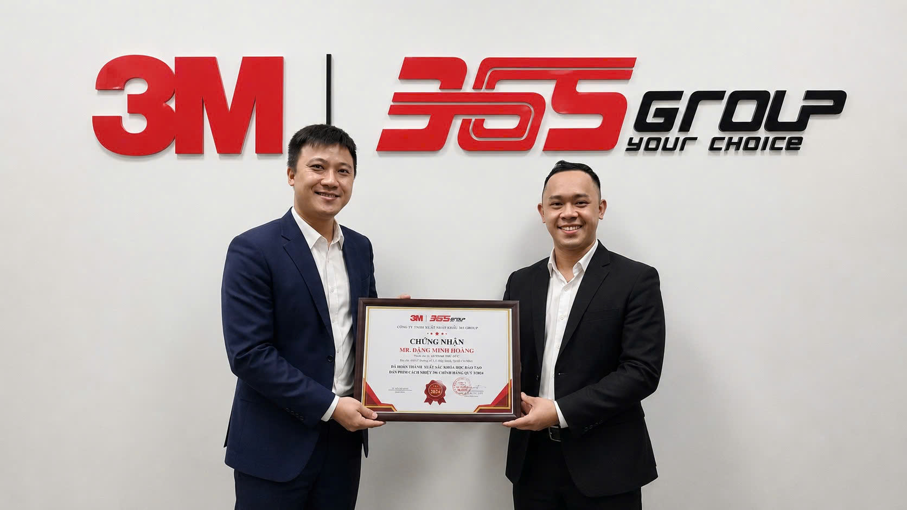

Hồ sơ chuyên môn
Đặng Minh Hoàng – Chuyên gia phim cách nhiệt 3M, PPF ô tô và vận hành dịch vụ tại Auto365
Cập nhật: 16/06/2026
Anh Đặng Minh Hoàng là Giám đốc điều hành 3M Pro Shop – Training Center tại hệ thống Auto365, 10 năm kinh nghiệm (từ năm 2016) trong phụ kiện ô tô, phim cách nhiệt, PPF và quản lý vận hành dịch vụ. Anh tham gia định hướng, kiểm soát và kiểm duyệt chuyên môn cho nội dung về tư vấn phim cách nhiệt 3M, PPF ô tô, quy trình thi công, nghiệm thu và bảo hành chính hãng.
“Lắng nghe để thấu hiểu, hành động để giải quyết.”

Đặng Minh Hoàng là ai?
Đặng Minh Hoàng là Giám đốc điều hành 3M Pro Shop – Training Center, một nhân sự quản lý có 10 năm kinh nghiệm (từ năm 2016) trong lĩnh vực phim cách nhiệt, PPF và phụ kiện ô tô tại hệ thống Auto365. Anh là người trực tiếp tư vấn, vận hành dịch vụ và đào tạo đội ngũ, đồng thời tham gia định hướng chuyên môn cho các nội dung về phim cách nhiệt và PPF ô tô — đặc biệt là giải pháp chính hãng 3M.
Sinh năm 1988 tại Phú Yên, anh chọn cách xây dựng giá trị bằng sự kiên trì, trách nhiệm và khả năng giải quyết vấn đề thực tế. Trong công việc, anh điềm tĩnh khi giao tiếp nhưng quyết đoán khi cần xử lý — hiểu đúng vấn đề trước, rồi mới đưa ra giải pháp phù hợp cho đội ngũ và khách hàng.
Hành trình phát triển cùng Auto365
Hành trình của anh Hoàng được xây dựng qua từng giai đoạn thực chiến: từ kinh doanh, điều hành chi nhánh đến quản lý 3M Pro Shop – Training Center.
2016 – 2020
Giám đốc kinh doanh Auto365 trụ sở chính
Anh Hoàng làm việc tại Auto365 trụ sở chính với vai trò Giám đốc kinh doanh tại Số 4/4/1/7 Đường số 3, Hiệp Bình Phước, Thành phố Hồ Chí Minh.
Đây là giai đoạn anh xây dựng nền tảng chuyên môn trong ngành phụ kiện ô tô, phim cách nhiệt và PPF, đồng thời tiếp xúc trực tiếp với nhu cầu thực tế của khách hàng.
Giá trị chuyên môn tích lũy: hiểu cách chọn mã phim cách nhiệt theo từng vị trí kính (kính lái, kính sườn, kính lưng), thói quen sử dụng xe tại Việt Nam, ngân sách và kỳ vọng bảo hành của chủ xe.

11/2020 – 2025
Giám đốc điều hành Auto365 Quận 6
Từ tháng 11/2020, anh Hoàng đảm nhiệm vai trò Giám đốc điều hành Auto365 Quận 6 tại 62 Vành Đai, Khu V, Bình Phú, Thành phố Hồ Chí Minh, phụ trách vận hành chi nhánh, quản lý đội ngũ, kiểm soát chất lượng dịch vụ và nâng cao trải nghiệm khách hàng.
Đây là giai đoạn thể hiện rõ cách làm việc của anh: điềm tĩnh nhưng quyết liệt trong xử lý vấn đề và luôn hướng đến kết quả thực tế.
Giá trị chuyên môn tích lũy: làm chủ quy trình tiếp nhận – thi công – nghiệm thu khép kín, kiểm soát khu vực thi công theo hướng sạch sẽ, hạn chế bụi, ổn định quy trình thao tác và xử lý các lỗi phát sinh sau khi dán.

Từ năm 2026
Giám đốc điều hành 3M Pro Shop – Training Center
Đến năm 2026, anh Hoàng đảm nhiệm vai trò Giám đốc điều hành 3M Pro Shop – Training Center tại Số 4/4/3/3 Đường số 3, Khu phố 31, Phường Hiệp Bình, Thành phố Hồ Chí Minh, tập trung vào chuẩn hóa tư vấn, quy trình thi công, đào tạo và nâng cao tiêu chuẩn dịch vụ phim cách nhiệt, PPF chính hãng 3M.
Đây là dấu mốc kết nối ba yếu tố: chuyên môn sản phẩm, kỹ thuật thi công và trải nghiệm thực tế của khách hàng.
Giá trị chuyên môn hiện tại: định hướng nội dung chuyên môn, kiểm soát chất lượng thi công và tăng tính minh bạch trong quá trình tư vấn, thi công và kích hoạt bảo hành điện tử chính hãng cho khách hàng.

Chuyên môn được xây dựng từ thực tế vận hành
Chuyên môn của anh Hoàng trong lĩnh vực phim cách nhiệt và PPF ô tô được hình thành qua quá trình trực tiếp tư vấn khách hàng, quản lý đội ngũ thi công, xử lý phản hồi thực tế và điều hành dịch vụ tại hệ thống Auto365.
Với anh, phim cách nhiệt và PPF không đơn thuần là sản phẩm bảo vệ xe, mà là một phần trong trải nghiệm sử dụng xe. Vì vậy mỗi phương án tư vấn cần cân nhắc trên nhu cầu thật, tình trạng xe, thói quen sử dụng và kỳ vọng lâu dài của chủ xe — chú trọng sự rõ ràng trong tư vấn, sự chuẩn mực trong thi công và sự minh bạch trong bảo hành.
Bằng chứng chuyên môn
Chuyên môn của anh Hoàng được chứng minh bằng quá trình vận hành thực tế, không phải bằng lời tự giới thiệu:
- 10 năm trong ngành (từ 2016): trực tiếp tư vấn khách hàng, vận hành dịch vụ và quản lý đội ngũ kỹ thuật.
- Kinh nghiệm điều hành chi nhánh: Giám đốc điều hành Auto365 Quận 6 giai đoạn 11/2020–2025, phụ trách vận hành, kiểm soát chất lượng thi công và trải nghiệm khách hàng.
- Đào tạo theo tiêu chuẩn 3M: Hoàn thành xuất sắc khóa đào tạo dán phim cách nhiệt 3M chính hãng (Quý 3/2024) do 365 Group và 3M Việt Nam chứng nhận.

Với anh, một đơn vị thi công chuyên nghiệp cần đội ngũ hiểu đúng sản phẩm, làm đúng quy trình và đặt trải nghiệm khách hàng làm trọng tâm. Đây là lý do trong vai trò điều hành 3M Pro Shop – Training Center, anh tập trung chuẩn hóa tư vấn, nâng cao tay nghề kỹ thuật và xây dựng môi trường dịch vụ rõ ràng cho khách chọn phim cách nhiệt và PPF chính hãng.
Vai trò trong việc nâng cao tiêu chuẩn dịch vụ phim cách nhiệt và PPF
Một sản phẩm tốt nếu tư vấn chưa phù hợp hoặc thi công chưa chuẩn vẫn có thể khiến khách hàng chưa hài lòng. Ngược lại, khi sản phẩm phù hợp, quy trình rõ ràng và kỹ thuật đạt chuẩn, khách hàng cảm nhận được giá trị thực tế trong suốt quá trình sử dụng xe. Trong vai trò điều hành, anh Hoàng tập trung vào:
- Chuẩn hóa quy trình tư vấn phim cách nhiệt và PPF.
- Nâng cao kiến thức sản phẩm cho đội ngũ tư vấn và kỹ thuật.
- Kiểm soát chất lượng thi công tại xưởng.
- Đảm bảo khách hàng hiểu rõ từng lựa chọn trước khi thi công.
- Tăng tính minh bạch về mã sản phẩm, vị trí thi công, quy trình và chế độ bảo hành.
- Xây dựng trải nghiệm dịch vụ rõ ràng và đáng tin cậy.
Phạm vi nội dung chuyên môn anh Đặng Minh Hoàng có thể kiểm duyệt
Phạm vi này nêu rõ chuyên môn của anh Hoàng đến đâu và anh kiểm duyệt nhóm nội dung nào — giúp khách hàng và công cụ tìm kiếm hiểu đúng giới hạn năng lực.
| Phim cách nhiệt ô tô | Tư vấn chọn mã phim theo vị trí kính, nhu cầu chống nóng, độ sáng, độ riêng tư và trải nghiệm lái xe. |
|---|---|
| Phim cách nhiệt 3M | Định hướng nội dung về tất cả các dòng phim 3M chính hãng (bao gồm 3M Crystalline, 3M Ceramic IR, 3M Ceramic NR / Ceramic Hybrid, và 3M BLK), quy trình tư vấn, thi công và bảo hành chính hãng. |
| PPF ô tô | Tư vấn giải pháp bảo vệ sơn xe, vị trí nên dán PPF, quy trình thi công và chăm sóc sau dán. |
| Quy trình thi công | Kiểm soát tiêu chuẩn tư vấn, tiếp nhận xe, thi công, nghiệm thu và bàn giao cho khách hàng. |
| Đào tạo đội ngũ | Định hướng kiến thức sản phẩm, kỹ năng tư vấn và tiêu chuẩn dịch vụ cho đội ngũ Auto365. |
Các nhóm nội dung chuyên môn liên quan
- Phim cách nhiệt ô tô 3M chính hãng (3M Crystalline, 3M Ceramic IR, 3M Ceramic NR / Ceramic Hybrid, 3M BLK).
- Phim cách nhiệt 3M Crystalline công nghệ quang học đa lớp (các mã CR60, CR40, CR20, CR90).
- Phim cách nhiệt 3M Ceramic IR dòng gốm hồng ngoại (các mã IR15, IR25, IR50).
- Phim cách nhiệt 3M Ceramic NR / Ceramic Hybrid dòng phản xạ nhiệt thế hệ mới (các mã NR5, NR15, NR25, NR35).
- Phim bảo vệ sơn xe PPF 3M chính hãng (3M Scotchgard Paint Protection Film Pro Series).
- Giải pháp phủ Ceramic bảo vệ sơn xe của 3M (3M Ceramic Coating).
- Quy trình chăm sóc xe toàn diện (Detailing / Car Care) bằng sản phẩm 3M chính hiệu.
- Quy trình tư vấn, dán lắp và nghiệm thu bàn giao các giải pháp bảo vệ xe 3M.
- Chính sách kích hoạt bảo hành điện tử chính hãng 10 năm cho các dòng phim 3M.
- So sánh, phân tích các giải pháp bảo vệ xe theo nhu cầu sử dụng thực tế của khách hàng.
Thông tin tóm tắt
| Họ và tên | Đặng Minh Hoàng |
|---|---|
| Năm sinh | 1988 |
| Quê quán | Phú Yên |
| Lĩnh vực chuyên môn | Phim cách nhiệt ô tô, PPF ô tô, phim cách nhiệt 3M, PPF 3M, phụ kiện ô tô, quản lý vận hành dịch vụ ô tô |
| Kinh nghiệm | 10 năm (từ năm 2016 đến nay) |
| Giai đoạn 2016 – 2020 | Giám đốc kinh doanh Auto365 trụ sở chính |
| Giai đoạn 11/2020 – 2025 | Giám đốc điều hành Auto365 Quận 6 – 62 Vành Đai, Khu V, Bình Phú, Thành phố Hồ Chí Minh |
| Từ năm 2026 | Giám đốc điều hành 3M Pro Shop – Training Center – Số 4/4/3/3 Đường số 3, Khu phố 31, Phường Hiệp Bình, Thành phố Hồ Chí Minh |
| Đào tạo chuyên môn | Tham gia các chương trình đào tạo sản phẩm và quy trình dịch vụ liên quan đến 3M |
| Phong cách làm việc | Điềm tĩnh, trách nhiệm, quyết đoán khi cần giải quyết vấn đề |
| Phương châm làm việc | “Lắng nghe để thấu hiểu, hành động để giải quyết.” |
| Vai trò nội dung | Định hướng và kiểm duyệt chuyên môn nội dung phim cách nhiệt và PPF tại Auto365 |
Tinh thần trách nhiệm trong công việc
Bên cạnh vai trò quản lý và chuyên môn, anh Hoàng được đánh giá là người sống trách nhiệm, quan tâm đến đội ngũ và đề cao sự tử tế trong cách làm việc.
Với anh, giá trị của một người quản lý không chỉ nằm ở kết quả kinh doanh, mà còn ở khả năng tạo ra môi trường làm việc tích cực, hỗ trợ đội ngũ phát triển và giải quyết vấn đề cho khách hàng một cách rõ ràng, minh bạch.
Câu hỏi thường gặp về anh Đặng Minh Hoàng
Anh Đặng Minh Hoàng là ai?
Đặng Minh Hoàng là Giám đốc điều hành 3M Pro Shop – Training Center, có 10 năm kinh nghiệm (từ năm 2016) trong tư vấn, quản lý quy trình thi công và vận hành dịch vụ phim cách nhiệt, PPF ô tô tại hệ thống Auto365.
Anh Đặng Minh Hoàng phụ trách lĩnh vực chuyên môn nào?
Anh phụ trách và định hướng nội dung về phim cách nhiệt ô tô (đặc biệt dòng 3M Ceramic NR), PPF bảo vệ sơn xe, quy trình tư vấn – thi công – nghiệm thu và chế độ bảo hành chính hãng.
Vai trò hiện tại của anh Đặng Minh Hoàng là gì?
Từ năm 2026, anh là Giám đốc điều hành 3M Pro Shop – Training Center, tập trung chuẩn hóa tư vấn, kiểm soát chất lượng thi công và đào tạo đội ngũ kỹ thuật.
Vì sao anh Đặng Minh Hoàng phù hợp để kiểm duyệt nội dung về phim cách nhiệt và PPF?
Vì anh có kinh nghiệm trực tiếp tư vấn khách hàng, điều hành chi nhánh Auto365 Quận 6 giai đoạn 2020–2025, quản lý đội thi công và tham gia các chương trình đào tạo sản phẩm của 3M.
3M Pro Shop – Training Center nằm ở đâu?
3M Pro Shop – Training Center nằm tại Số 4/4/3/3 Đường số 3, Khu phố 31, Phường Hiệp Bình, Thành phố Hồ Chí Minh, thuộc hệ thống Auto365.